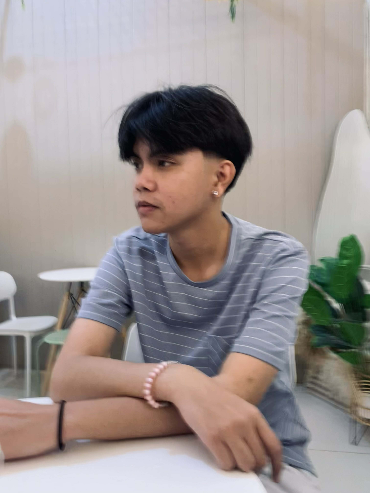
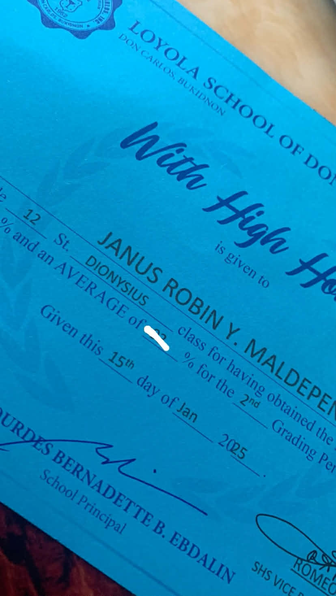
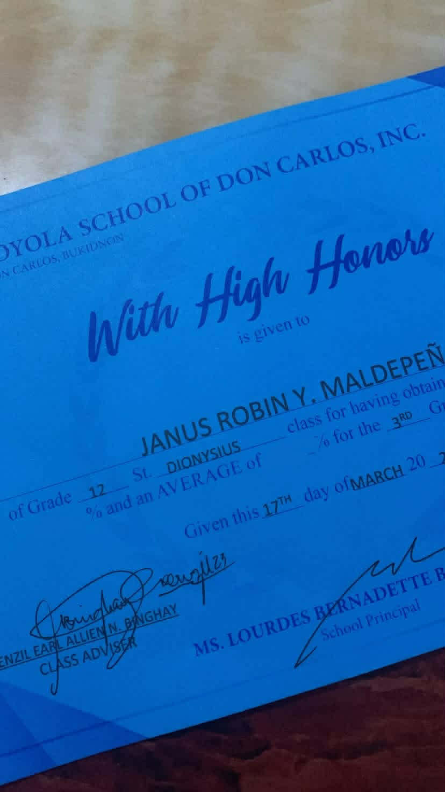
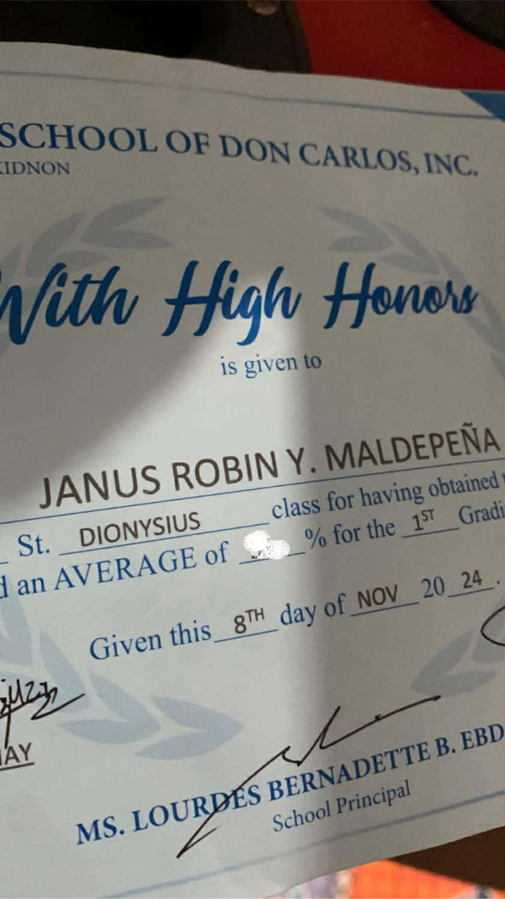
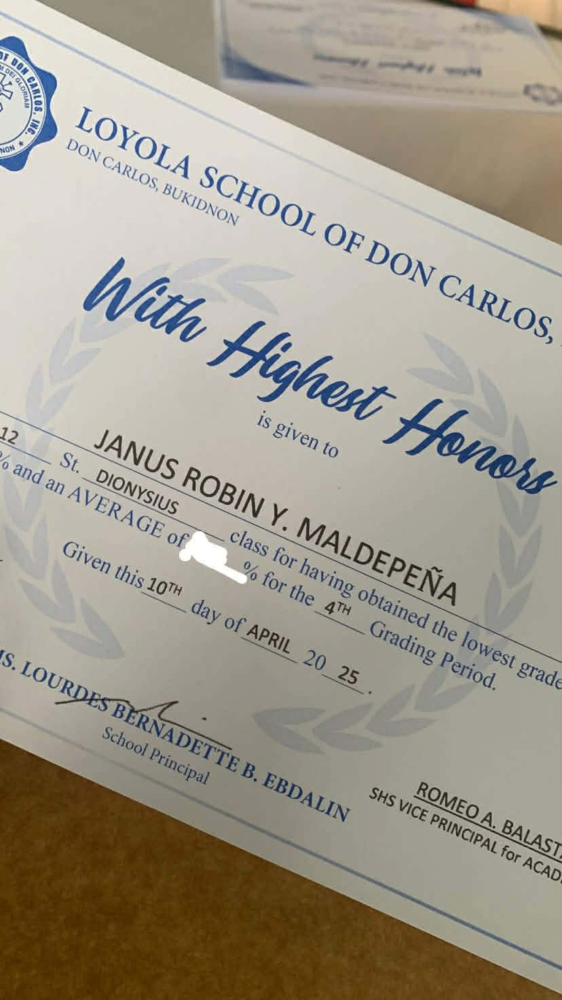

About Me

I completed my junior and senior high school education at Loyola High School as a
consistent honor student, achieving With High Honors and eventually
With Highest Honors.
I chose Information Technology because of my deep interest in computers,
problem-solving, and innovation.
I enjoy understanding systems, building solutions, and continuously learning
new technologies to grow in the IT field.
Achievements

With High Honors

With High Honors

With High Honors

With Highest Honors